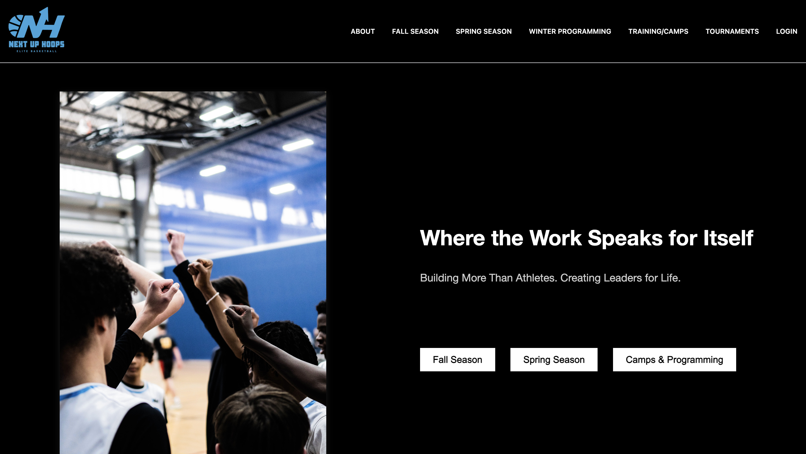
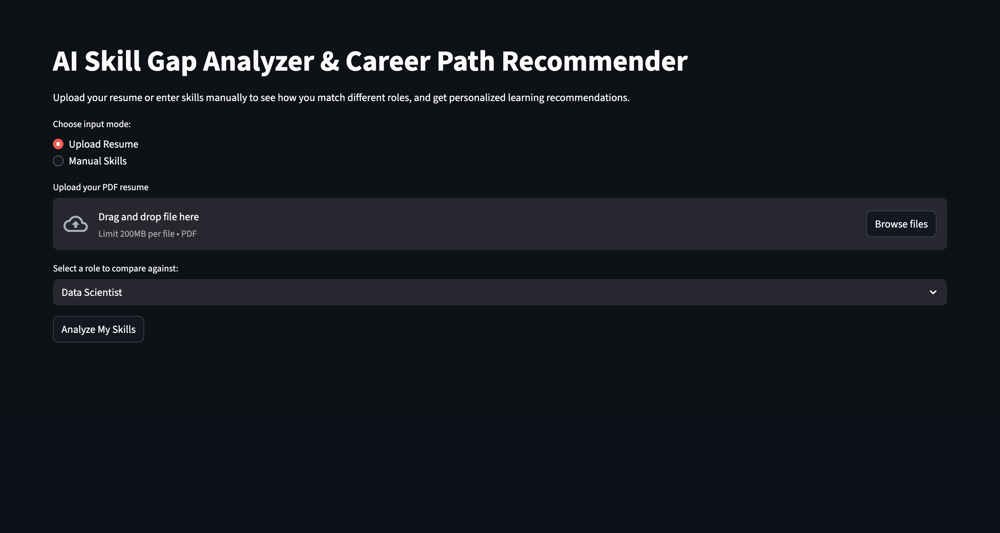
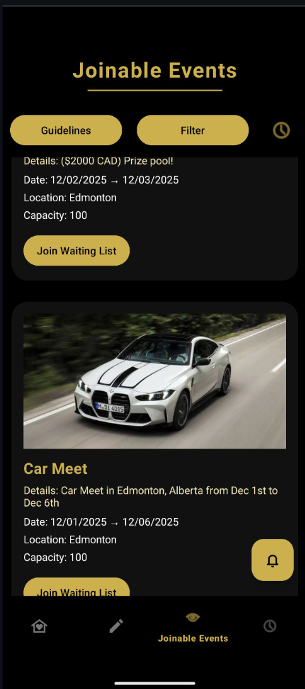

Next Up Hoops
Building a production full-stack platform from scratch taught me about real-world deployment, user feedback, and the importance of understanding your users' needs.
Read more →Deep dives into my projects, the challenges I faced, and what I learned along the way.

Building a production full-stack platform from scratch taught me about real-world deployment, user feedback, and the importance of understanding your users' needs.
Read more →
Exploring AI embeddings and semantic search to solve a real problem. This project pushed me to understand how modern AI tools work under the hood.
Read more →
Diving deep into systems programming with C. Building a memory allocator from scratch gave me a new appreciation for what happens behind the scenes.
Read more →
My first Android app in Java. This project taught me mobile development fundamentals and the importance of good UX design.
Read more →